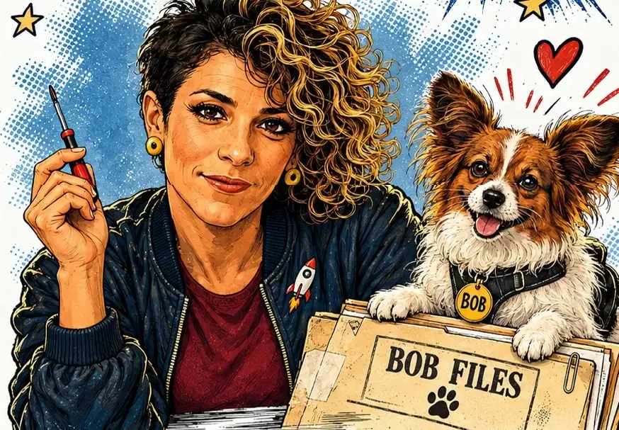

Per molto tempo, nella mia testa e nelle cartelle del computer, questo libro si è chiamato Sfigata. Non era un titolo definitivo: era più una diagnosi. Mettevo insieme episodi della mia vita che, presi uno per uno, sembravano piccoli fallimenti: il nome scelto da altri, la frittata caduta in campeggio, il sogno di fare l'astronauta finito per due centimetri.
Poi, a forza di rileggerli, mi sono accorta che non stavo raccontando una serie di disastri. Stavo raccontando una origin story. Quella che ogni supereroe ha, prima di diventare tale.
Il tono: autobiografia, ma da fumetto
Fin dall'inizio sapevo che non volevo scrivere un'autobiografia seria. Volevo il tono dei fumetti di supereroi applicato alla vita di tutti i giorni: le pagine di racconto si alternano a infografiche ironiche, schede personaggio e tavole a tutta pagina, come le splash page dei comics.
Anche la grafica doveva dirlo subito: blu notte, rosso e oro, il carattere Bangers per i titoli, i box tratteggiati gialli per le note. Ogni capitolo è un episodio, dall'anagrafe all'università.
Arriva Bob
Il personaggio che ha sbloccato tutto è stato Bob. Il mio cane, nella storia, è convinto di essere un investigatore: rilegge ogni episodio come un caso, con soggetti, prove, minacce e verdetti non richiesti. Sono nati così i Bob Files: ogni ricordo diventa un fascicolo, ogni dettaglio una prova, ogni figuraccia un timbro rosso.

Bob mi ha dato una cosa preziosa: un secondo sguardo. Io racconto, lui commenta. E quando un episodio rischiava di diventare troppo serio, c'era sempre un fascicolo pronto a ridimensionarlo.
Forse i supereroi sono quelli che sopravvivono ai piccoli disastri quotidiani senza perdere la capacità di ridere.
Meno è meglio (anche nelle tavole)
Le prime versioni delle pagine erano piene: testo, disegni, note, frecce, tutto insieme. Ho ridisegnato l'impaginazione del primo capitolo per lasciare respirare le immagini, e quella revisione è diventata la regola per tutto il libro. Una pagina deve far ridere o far pensare, non costringere a cercare dove guardare.
Dal sito al libro
Su questo sito, per un periodo, i fascicoli hanno avuto una casa chiamata Bob Notes: un archivio dove pubblicavo qualche caso per vedere l'effetto che faceva. Era un modo per mettere alla prova il tono prima di chiudere il libro.
A ottobre 2026 Sfigata è diventato Origin Movie: Pensavo di essere sfigata… invece ero un supereroe, in edizione cartacea su Amazon. Il nome in copertina è quello che usano tutti: Cinzia. Alcuni fascicoli li trovi sul sito; il #006, il #007 e il #008 restano classificati. Bob si rifiuta di commentare.
E adesso?
Adesso il libro esce dalle pagine. Sto portando Origin Movie nelle scuole e nelle biblioteche, perché è pensato soprattutto per chi, a dodici o sedici anni, si sente fuori posto. Negli incontri partiamo da una tavola e da una domanda, e alla fine ognuno può scrivere il proprio Bob File.
E sui social racconto i capitoli con dei piccoli trailer, uno per episodio, come si fa con i film. Del resto, il titolo l'avevo promesso.